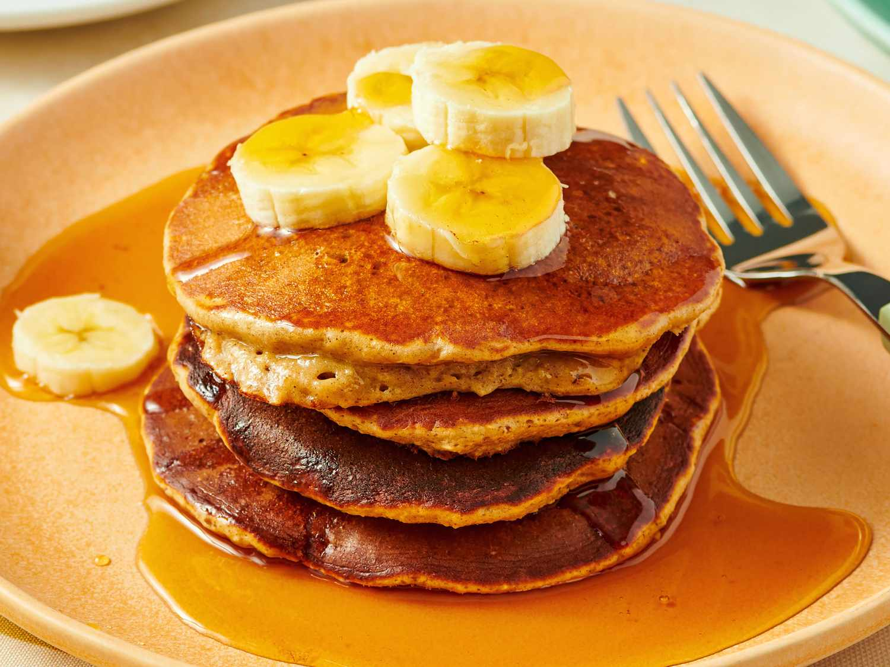

Banana Pancakes

Ingredients [For 4 pancakes]
- 2 medium-to-large ripe bananas
- 4 large eggs
- ½ cup whole wheat flour or buckwheat flour or ⅔ cup oat flour
- Butter, avocado oil or ghee, for cooking
- Optional flavor/nutrition boosters: ½ teaspoon ground cinnamon, up to 2 tablespoons hemp hearts and/or ground flaxseed, up to ¼ teaspoon salt
Steps
- In a medium mixing bowl, mash the banana with a large fork until it is shiny and mostly smooth. Add the eggs and whisk until the eggs are evenly incorporated into the banana.
- Add the flour and any optional boosters. Gently stir until combined. Set aside while you preheat the skillet (the batter can rest for up to 1 hour if need be)
- Heat a large skillet (stainless steel, cast iron or nonstick) over medium-low heat (if using an electric griddle, heat it to 350 degrees Fahrenheit). You’re ready to start cooking pancakes once a drop of water sizzles on contact with the hot surface. If necessary, lightly oil the cooking surface with a pat of butter or oil, carefully wiping up excess with a paper towel (nonstick surfaces likely won’t require any oil).
- Scoop ¼ cup batter onto the hot skillet, leaving a couple of inches around each pancake for expansion. Cook until small bubbles form on the surface of the pancakes, 2 to 3 minutes.
- Flip the pancakes, then cook until lightly golden on both sides, 1 to 2 minutes more. Repeat the process with the remaining batter, adding more butter and dialing down the heat if the pancakes are turning dark on the outside before they are cooked through on the inside.
- Serve immediately or keep warm in a 200 degree Fahrenheit oven. Leftover pancakes can be stored in the refrigerator for up to 3 days, or frozen in a freezer bag for up to 3 months. To reheat, stack leftover pancakes and wrap them in a paper towel before gently reheating in the microwave.